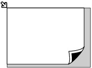
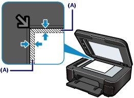
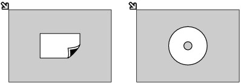
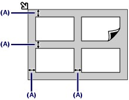

How to Load Originals for Each Function
How to Load Originals for Each Function Loading the Original to Be Aligned with the Alignment Mark
Loading the Original to Be Aligned with the Alignment Mark  Load originals to copy or fax
Load originals to copy or fax
In the scan mode,
- select Auto scan for Doc.type to scan text documents, magazines, or newspapers
- select Document or Photo for Doc.type and specify a standard size (A4, Letter, etc.) for Scan size to scan originals
With a software application on a computer,
- scan text documents, magazines, or newspapers
- select a standard size (A4, Letter, etc.) in Document Size to scan originals
Load the original WITH THE SIDE TO SCAN FACING DOWN and align it with the alignment mark  .
.

 Important Important

(B) 0.12 inches / 3.0 mm (C) 0.20 inches / 5.0 mm (D) 0.13 inches / 3.4 mm (0.25 inches / 6.4 mm for Letter and Legal-sized paper) (E) 0.13 inches / 3.4 mm (0.25 inches / 6.3 mm for Letter and Legal-sized paper) |
Loading Only One Original in the Center of the Platen Glass Scan one printed photo in Photo reprint of the copy mode
In the scan mode,
- select Auto scan for Doc.type to scan one printed photo, postcard, business card, or disc
- select Photo for Doc.type and specify Auto crop for Scan size to scan one original
Scan one printed photo, postcard, business card, or disc with a software application on a computer
Load the original WITH THE SIDE TO SCAN FACING DOWN and place it at least 0.4 inches / 10 mm away from the edges of the Platen Glass.

Loading Two or More Originals on the Platen Glass Scan two or more printed photos in Photo reprint of the copy mode
In the scan mode,
- select Auto scan for Doc.type to scan two or more printed photos, postcards, or business cards
- select Photo for Doc.type and specify Multi crop for Scan size to scan two or more originals
Scan two or more printed photos, postcards, or business cards with a software application on a computer
Load two or more originals WITH THE SIDE TO SCAN FACING DOWN and place them at least 0.4 inches / 10 mm away from the edges of the Platen Glass and at least 0.4 inches / 10 mm apart from each other.

(A) 0.4 inches / 10 mm
 Note Note
|